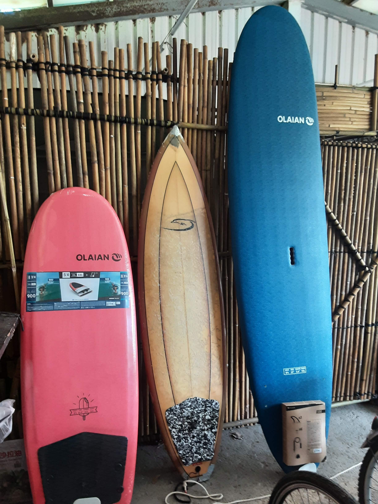
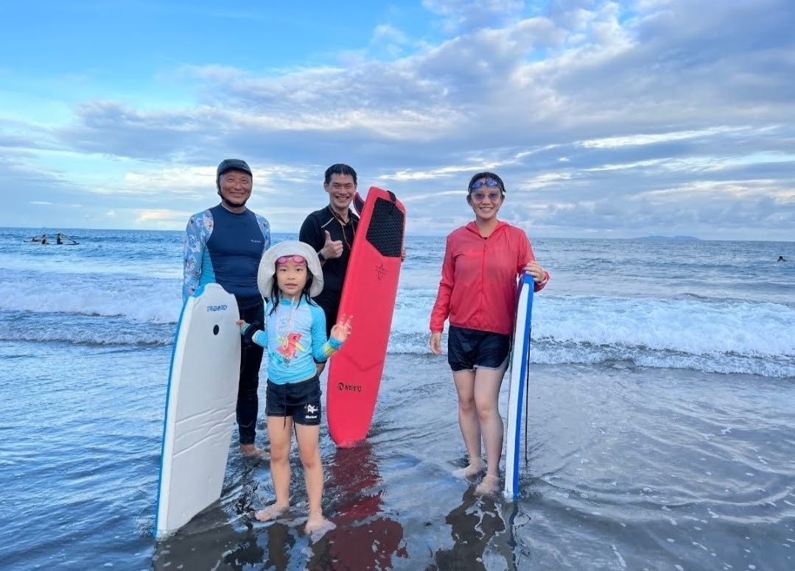
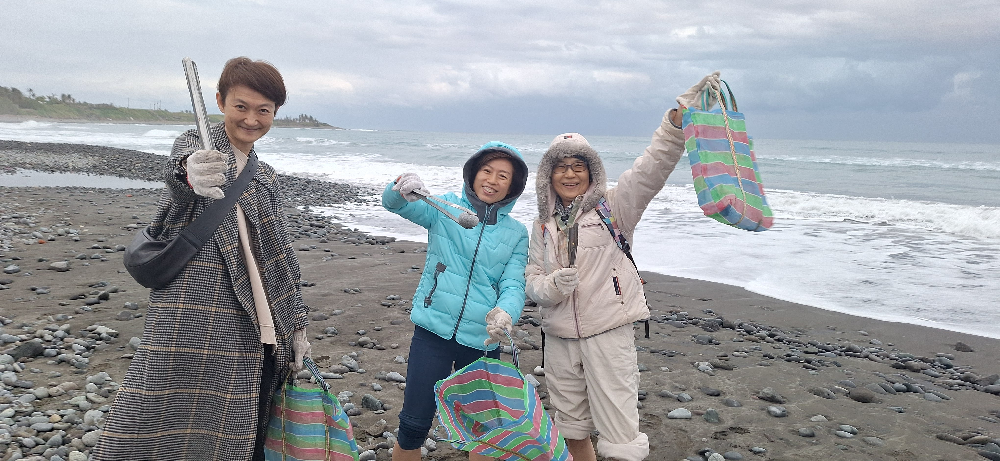
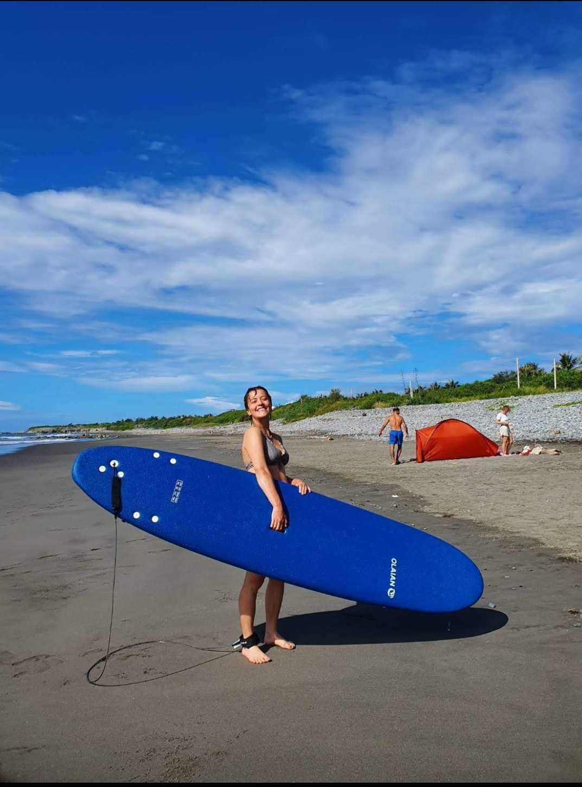

放下陸地上的思維負擔與焦慮，跳入太平洋的深藍懷抱。在浪花起伏間練習隨浪漂浮，讓身體學會不抵抗、順應流動；以敬畏的心親近大海，重啟內在的寧靜與能量。
都蘭共學堂主理人 ‧ 長年海人實踐者
「大海是最好的心理醫生。當你浮在浩瀚無邊的太平洋上，望著藍天與都蘭山，所有的繁雜念頭都會被浪潮自然洗淨。」
直擊都蘭鉛橋海灘的日常海浪！感受隨波漂浮的平靜與在海水中放空自我的自在
順應海浪推動，不與海水對抗。放鬆全身每一寸肌肉，讓浪花帶走所有疲憊。
在太平洋深藍中向外划水，轉身回望都蘭聖山，體驗身心靈完全交託天地的廣闊。
現代神經科學研究指出，當人類置身於水邊與藍色環境時，大腦會進入深層平靜的「藍色心靈（Blue Mind）」狀態
面對遼闊的太平洋深藍，海風所含的高濃度負離子與規則海浪節奏，能迅速調節自律神經，阻斷大腦反覆思慮的「預設模式網絡（DMN）」，帶來深沉的心靈重啟。
在陸地上我們習慣控制一切，但在海裡「控制」只會招致嗆水與疲累。練習在浪面隨波漂浮，順應海水的承托與湧動，學會信任自然，放手獲得真正的輕鬆。
坐在浪板上向外望是無際太平洋，轉過身是聳立雄偉的都蘭聖山。在山與海的環抱中，重新校準自我與世界的關係，感受生命的渺小與豐盛。
我們享受了太平洋帶來的療癒與歡樂，也要為這片海灘留下一份溫柔。在都蘭共學堂的衝浪日常中，我們發起「每天下海或上岸時，隨手在沙灘拾起至少一個廢棄寶特瓶帶回回收」。
走過都蘭美麗的礫石與黑沙灘，讓我們留下的只有腳印，帶走的除了滿滿的心靈能量，還有那一個個被浪花推上岸的塑料瓶。
記錄鉛橋海灘的落日霞光、海浪起伏與學員隨浪漂浮的珍貴時刻（照片陸續上傳中）

傍晚 16:00 鉛橋海灘的金色霞光

順應海流，全然信任大自然的浮力

上岸隨手帶走一個塑料瓶，守護海灘

回望都蘭聖山，天地間的浩瀚對話
都蘭共學堂學員專享！提供完整的水上安全與漂浮用具，可線上透過 Google 表單預約登記。
高浮力發泡板與長板，穩定好划水，初學者練習隨浪漂浮與起乘首選。
輕便好攜帶，適合近岸浪花體驗，貼近水面享受被波浪推動的快感。
提供可靠的安全浮力支撐，即使不諳水性也能放心在海面上仰躺漂浮。
防曬、防礁石刮傷與保暖，讓你在太平洋中享有全方位的舒適防護。
學員專享免費／勞務折抵機制。請點擊下方按鈕填寫 Google 表單預約，我們將於 16:00 鉛橋海灘共學漂浮時段為您備妥裝備！
每天下午 16:00 於都蘭鉛橋海灘進行（視海象天候調整）。如欲參加，請前往共學堂首頁線上預約登記，在課程選單中勾選【衝浪與海洋漂浮 (阿中)】！